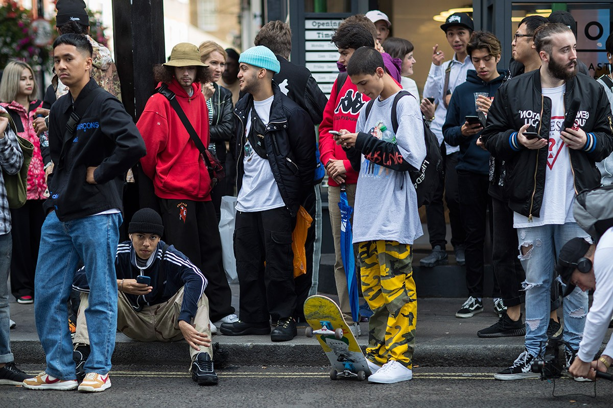

스트리트 패션(Street Fashion, Streetwear)
이란 단어 뜻 그대로 길거리의 사람들의 패션을 일컫는 말이다. 이전에는 스트리트 패션이라는 분야에 대해 특별한 정의가 없었으나 2000년대부터 조명받기 시작했고, 지금은 각종 스트리트 패션 브랜드, 스트리트 패션 잡지나 기타 관련 단체가 생겨났다.주로 10~20대의 젊은 세대를 중심으로 형성되어 있으며 해외에서는 30~40대의 패션 피플까지 커버되어 있기도 하다. 자주 변하는 유행을 중심으로 다양한 감성과 다양한 스타일의 종합되는 속성을 가지고 있으며 이를 보고 많은 디렉터들이 키치적이라고 표현한다.
50~60년대에는 하위계층에서 보수적 체제에 반항하는 하위 저급문화로 인식되었을 뿐이었으나, 지금은 새로운 패션분야이자 사업 아이템등 다양한 입장에서 재조명되어 '대중적인 패션'이라는 의미로 정착중에 있다.

과거엔 단순히 스케이트 보더,픽시,힙스터들이 입고다니는 패션의 의미가 강했으나 최근 쇼미더머니를 필두로한 힙합 유행이 시작되면서 힙합 아티스트들이 입던 스트리트 패션이 유행을 타게되면서 과거의 펑퍼짐한 바지와 큰 운동화를 신던 힙합패션이 아니라 좀더 현대적으로 해석된 힙합패션의 의미를 가장 잘 담아내고 있다.
과거 슈프림이나 스투시와 베이프같은 스트리트 패션 브랜드만 입는것이 아닌 베트멍,발망,구찌등의 하이엔드 브랜드들 섞어서 해외 힙합 아티스트들 처럼 스트리트 패션 느낌을 내서 입는것이 유행을 타기 시작했다. 특히 베트멍의 루즈핏 유행을 필두로 팔길이가 매우긴 롱슬리브나 3XL~5XL 정도의 크기를 가진 항공점퍼가 유행하고 있다. 그리고 과거 PYREX로 반바지-레깅스 조합을 유행시킨 버질 아블로가 오프 화이트라는 브랜드를 만들어 등에 오프화이트 특유의 로고가 그려진 플란넬과 반팔티를 유행시키고 있다.
스트리트 패션에서 신는 신발같은 경우엔 예전부터 나이키의 에어 조던과 반스의 올드스쿨을 많이 신고다녔지만 최근 칸예 웨스트의 이지 부스트가 대박을 치게되면서 양말느낌의 삭스슈즈를 유행시키고 있다 특히 발렌시아가의 스피드 트레이너가 지금의 스트리트 패션 감성과 잘 어울려서 이지 부스트와 함께 삭스슈즈 유행을 이끌어나가고 있다. 또한 올드스쿨패션도 스트리트 패션 중 하나로 최근들어 많은 힙합 아티스트들이 입기 시작하면서 인기가 급부상했다. 타미 힐피거,카파,엘레쎄,필라등의 과거 전성기를 가졌던 브랜드의 점퍼나 트랙팬츠를 입으면서 색안경이나 커트코베인 선글라스등을 매치하여 90년대풍의 스트리트 패션을 다시 재현하고 있다 특히 카파와 고샤 루브친스키의 콜라보로 과거 올드스쿨 패션을 현대식으로 재해석하여 올드스쿨 열풍을 더욱더 가세시키고 있다.